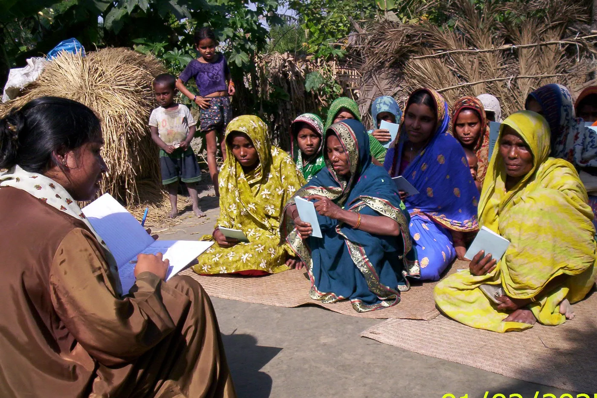
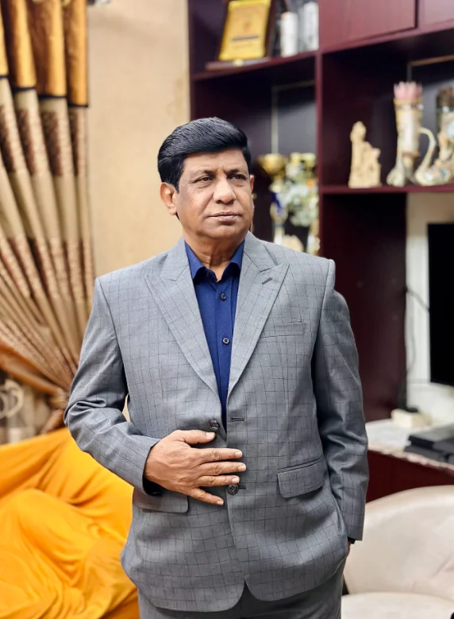

WITH COMMUNITIES, SINCE 1996.
A better tomorrow.
Built together.
Education. Opportunity. Resilience. We help coastal communities in Bangladesh build the future they deserve.

Real people. Shared possibilities.A stronger tomorrow.
ABOUT HASI
Everyone deserves
room to grow.
We are the Homeland Association for Social Improvement. But you can call us HASI.
Founded in 1996 in Hatiya, Bangladesh, we work with people facing poverty, exclusion, and the challenges of living on a vulnerable coastline. Together, we build pathways to education, healthier lives, economic independence, and disaster resilience.
Our approach is simple: listen first, work together, and put communities at the heart of every decision.
Our vision & mission +
We envision a society where everyone lives with dignity, free from discrimination. Our mission is to support self-reliant, sustainable livelihoods through community participation, gender equality, local resources, advocacy, and capacity building.
Who we work alongside +
Our work prioritizes disadvantaged women and children, people with disabilities, landless families, and communities exposed to disasters and climate shocks.
WHAT WE DO
Real work.
Lasting change.
From the classroom to the coastline, discover the projects and partnerships behind our work.
From our project archive. Descriptions reflect the original website; current project status may vary.
COMMUNITY STORIES
People at the heart
of every story.

OUR PEOPLE
Local knowledge.
Lifelong commitment.
Akram Hossain Rumi has led HASI as Executive Director since its founding in 1996. A lawyer and development practitioner, his work spans education, disaster recovery, food security, sanitation, and women’s empowerment.
His approach brings local knowledge and national and international partnerships together in service of marginalized communities.
PROGRESS IS A COLLECTIVE EFFORT
Better, together.
Organizations that have supported or partnered with HASI, as documented in our original website.
LET’S MAKE A DIFFERENCE
Good things start
with a conversation.
Interested in partnering, volunteering, or learning more?
We’d love to hear from you.